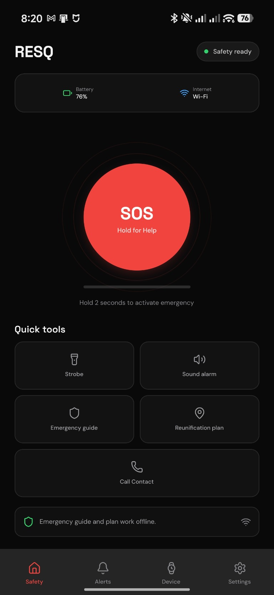
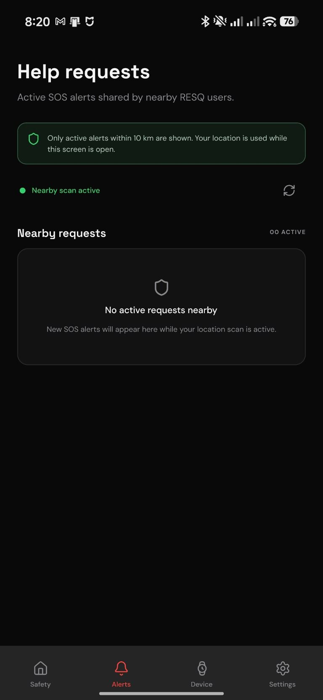
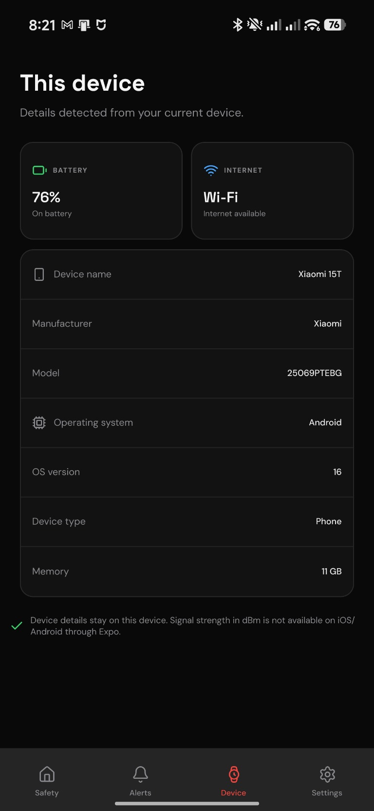
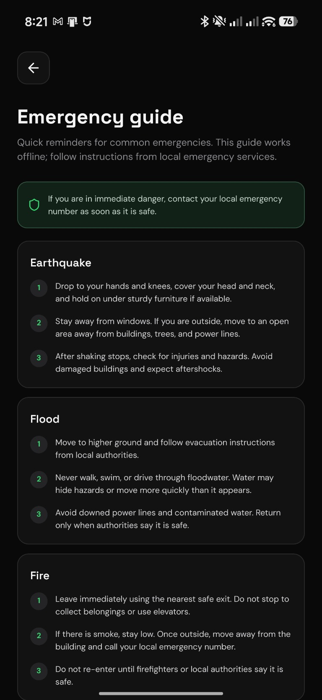
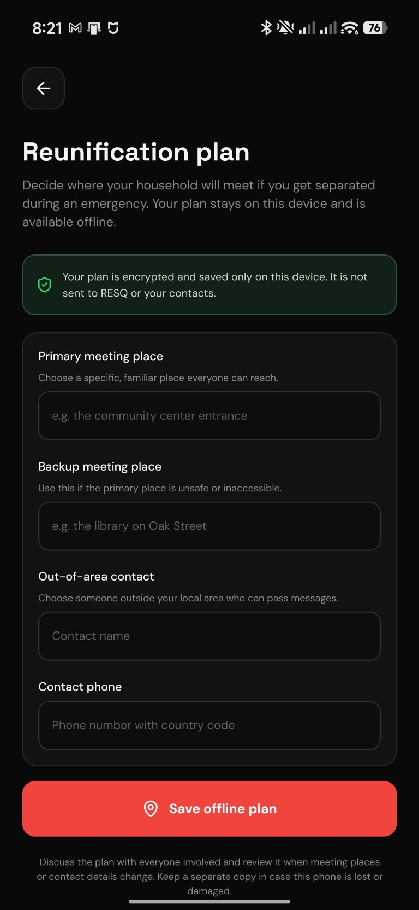

SOS when you need it
Activate an SOS alert from the Safety screen. If you enable community sharing, your alert can be shared with nearby RESQ users. You can also open a prepared SMS for your emergency contacts.
RESQ puts practical emergency tools in your pocket—from an SOS alert to an offline plan for finding each other again.
Android APK · Free to download · Internet required for account and SOS sharing
Explore the real screens for everyday readiness and emergency planning.





Simple actions to help you prepare, signal for help, and reach the people who matter.
Activate an SOS alert from the Safety screen. If you enable community sharing, your alert can be shared with nearby RESQ users. You can also open a prepared SMS for your emergency contacts.
Review practical guidance for common emergencies. Create a reunification plan with primary and backup meeting places and an out-of-area contact. Your plan stays encrypted on your device.
Use the sound alarm or screen strobe to draw attention. Both are user-started and stop when RESQ leaves the foreground. The alarm uses your phone’s media volume.
The guide and reunification plan are stored on your phone, so you can review them without an internet connection.
The Android APK will be available from the latest public GitHub Release. Check back after the project’s release page is published.
The public download link will appear here after the GitHub repository is set up.
RESQ does not dispatch emergency services or guarantee message delivery. For immediate danger, call your local emergency number. Follow instructions from local authorities; this app is not a substitute for emergency services.